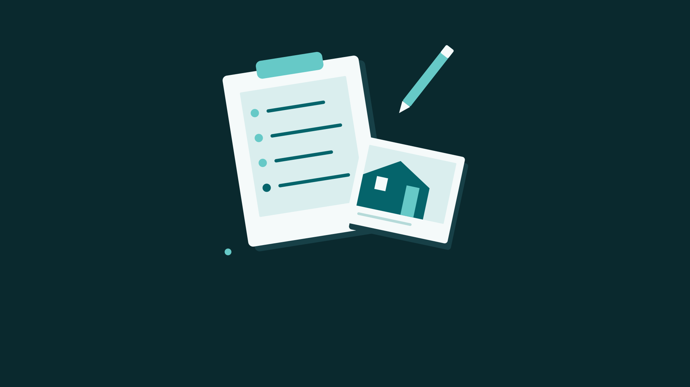

Event preview · In preparation
A Wider View of Your Projects
Keep local project records with issues, notes, photos and markup, then share a PDF report.
Explore the app guide
Concept illustration, not an app screenshot or device demonstration.
Keep the project in view.
Organize observations by project and keep reference photos alongside your notes. Project records are local, not a live collaboration service.
Launch details pending
We’re preparing this event experience. Availability, supported devices and launch timing have not been confirmed.
This is a browser preview, not an active in-app event. It does not open event content in the app. Check back for confirmed launch details.